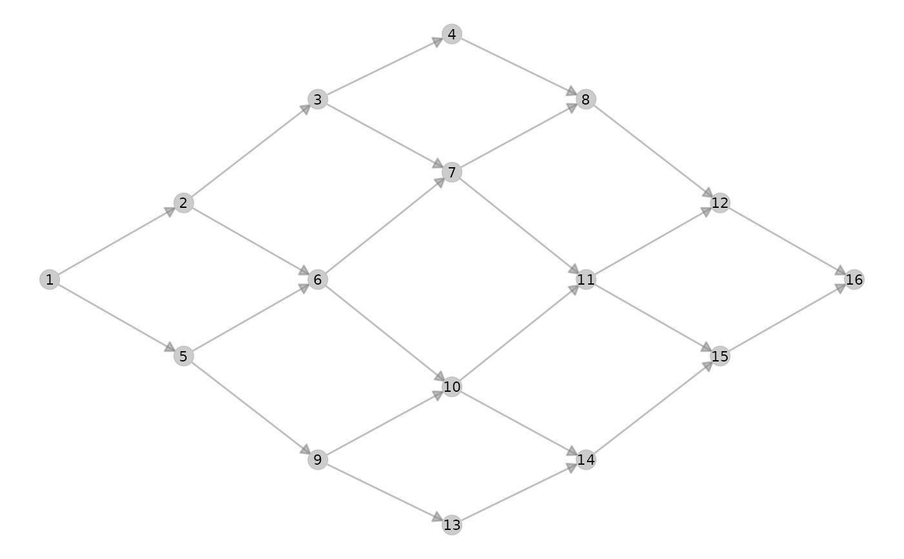
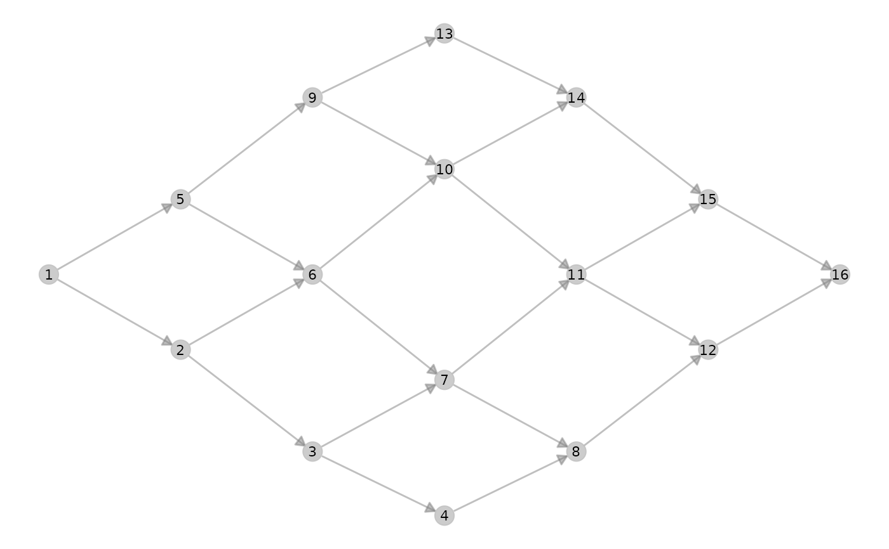

Function that provides network static representation (using 'ggnet') from a 'metanetwork' object with a layout based on a diffusion kernel
Usage
ggmetanet(
metanetwork,
g = NULL,
beta = 0.1,
legend = NULL,
mode = "TL-tsne",
edge_thrs = NULL,
layout_metaweb = F,
nrep_ly = 1,
flip_coords = F,
diff_plot_bool = F,
alpha_per_group = NULL,
alpha_per_node = NULL,
alpha_interactive = F,
ggnet.config = ggnet.default,
TL_tsne.config = TL_tsne.default
)Arguments
- metanetwork
object of class metanetwork
- g
network (igraph object) to represent, default is metaweb
- beta
the diffusion parameter of the diffusion kernel, a positive scalar controlling the vertical squeezing of the network
- legend
resolution for the legend, legend resolution must be a coarser resolution than the resolution of g, default is NULL
- mode
mode used for layout, 'TL-tsne' for trophic level t-sne and 'TL-kpco' for trophic level kernel based pco. Default is 'TL-tsne'
- edge_thrs
if non-null, a numeric (between 0 and 1) indicating an edge threshold for the representation
- layout_metaweb
a boolean indicating whether the layout of the metaweb should be used to represent the network to use metaweb layout = T, you need first to compute metaweb layout for this beta value using
attach_layout()- nrep_ly
If several layouts for this beta value are attached to the metaweb (if
layout_metaweb = T), index of the layout to use, seeattach_layout()- flip_coords
a boolean indicating wheter coordinates should be flipped.
- diff_plot_bool
boolean, do not edit by hand
- alpha_per_group
controlling alpha per group (only for 'ggnet' vis), a list of format
list(resolutions = "XX",groups = XX,alpha_focal = XX,alpha_hidden = XX), see example- alpha_per_node
controlling alpha per node (only for 'ggnet' vis), a list of format
list(nodes = XX,alpha_focal = XX,alpha_hidden = XX), see example In that case, y-axis is the trophic level and x-axis is the layout axis- alpha_interactive
a boolean indicating whether alpha (that is node transparency) should be asked in interactive mode to the user
- ggnet.config
configuration list for ggnet representation, default is ggnet.default
- TL_tsne.config
configuration list for mode 'TL-tsne', default is TL_tsne.default
Examples
library(metanetwork)
library(igraph)
g = make_ring(5,directed = TRUE)
meta0 = build_metanet(g)
#> Warning: nodes of metaweb do not have names. Assigning integers as names
meta0 = compute_TL(meta0)
ggmetanet(meta0)
#> mode is TL-tsne
#> beta = 0.1
#> Epoch: Iteration #100 error is: 145.616807988237
#> Epoch: Iteration #200 error is: 34.6732555187738
#> Epoch: Iteration #300 error is: 34.6731847994853
#> Warning: node.size is invariant; size.cut ignored
#> Warning: Removed 5 rows containing missing values (geom_segment).
#> Warning: Removed 5 rows containing missing values (geom_point).
#> Warning: Removed 5 rows containing missing values (geom_text).

# angola dataset
data(meta_angola)
meta_angola = compute_TL(meta_angola)
ggmetanet(meta_angola,legend = 'Phylum',beta = 0.05)
#> mode is TL-tsne
#> beta = 0.05
#> Epoch: Iteration #100 error is: 907.410775018357
#> Epoch: Iteration #200 error is: 217.111604921591
#> Epoch: Iteration #300 error is: 217.219314198296
